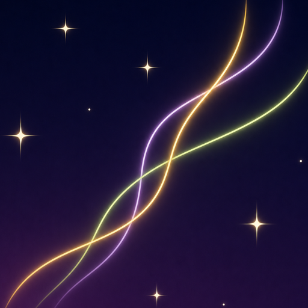
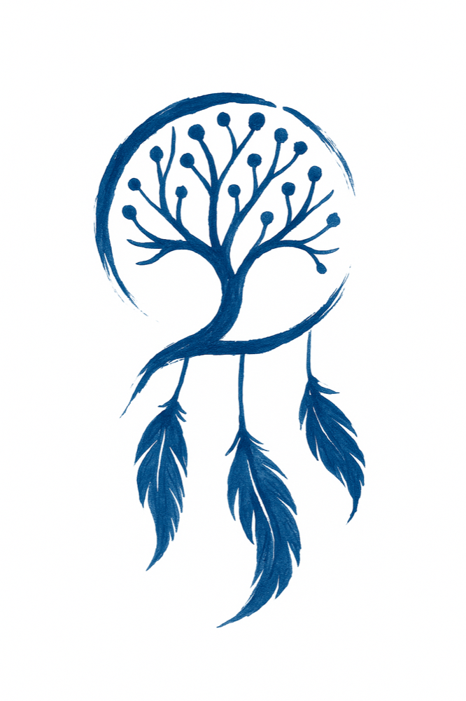

Catch it while it’s here
Record a dream or a fragment as you wake, without stopping to organize every detail.

Gossamer
By ThinkSync StudioCapture a dream before it fades, save a moment from your day, and revisit the threads that connect them. A quiet space for your own words and imagination.

Reflect
Speak while the dream is still fresh. Return when you have time to reflect. Gossamer gives each moment its own space.
Record a dream or a fragment as you wake, without stopping to organize every detail.
Keep something from your day: a conversation, a feeling, or a detail you want to remember.
Explore recurring themes and connections across your entries, with space for your own interpretation.
Thoughtfully made
Over time, dreams and daily moments become a record of your inner world. Revisit a favourite entry, explore connections, and discover the app’s visual tapestry and reflection features.
Questions about capturing dreams or exploring your journal? We’re here to help.
Contact the studio